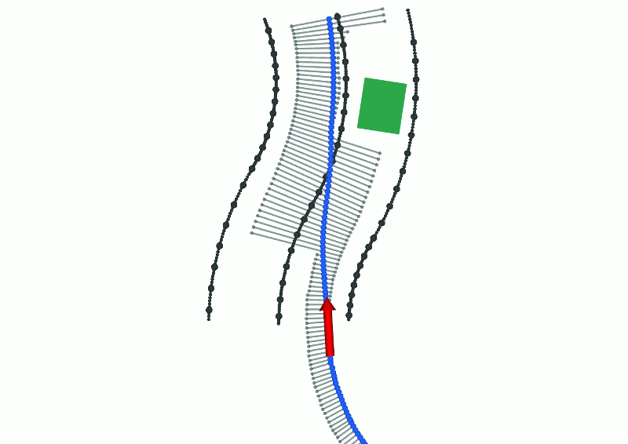

KITcar
KITcar is a group of about 30 students at KIT that develop an autonomous model car to participate in the Carolo-Cup competition. Carolo-Cup is a competition of student teams from germany and other countries as well, organized by TU Braunschweig. Each team develops a car that handles a parkour with different real-world challenges such as parking, turning, overtaking obstacles or following them in no-passing areas and giving way to cars and pedestrians at intersections, barred areas, crosswalks.
I joined the KITcar team right when I started my first master semester at KIT. The team has to organize itself and is split into the 4 sub teams: Hardware, Perception, Navigation and Control. I was leader of the sub team Navigation which is responsible for path planning and decision making based on the environment information extracted by the Perception team. There are many interesting concepts implemented in the car. Here are some from the Navigation team (presented very briefly).
Path Planning
We sample the approximated lane with so called 'gates'. A gate is a pair of end points that the vehicle has to drive through in between. They are constructed along the driving distance and perpendicular to the lane. Obstacles are cut out from the gates with an additional safety margin and the left lane is only included in cases of overtaking.
The path is now modeled as a polygonal line through a single point on every gate. The position of this point on the gate is optimized using Least Squares with a few cost functions to get a short, smooth and overall fast path through the parkour.